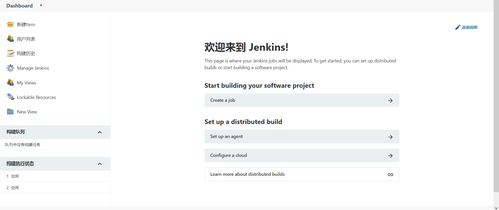

第4节：持续集成和交付
目标
[x] Jenkins 环境搭建
[x] Jenkins中部署项目执行
Jenkins环境搭建
1.下载jdk、安装tomcat（https://blog.csdn.net/Uncle_wangcode/article/details/108562679）
2.下载Jenkins（https://www.jenkins.io/download/）
3.将war包放置在tomcat中的webapps中,并启动项目
4.开启tomcat服务器，并进入http://127.0.0.1:8080/jenkins/安装Jenkins
·选择默认安装(第一个)
设置相关信息

注意：tomcat的端口可能会与Jenkins端口冲突
部署项目并执行
1.新建项目文件夹
新建工程项目
邮件通知
通过插件【Email Extension Template】进行邮件通知。
QQ邮箱开启服务IMAP/SMTP服务，会通过绑定的手机进行激活，并会生成随机码
第一步：Manager Jenkins中 configure System中 找到Extended E-mail Notification配置好相关信息。
第二步：在项目中的工程配置，即构建后操作
第三步：build Now ，邮箱接收到相关结果
定时项目执行
官方配置说明
MINUTE HOUR DOM MONTH DOW
| 字段 | 说明 | 取值范围 |
|---|---|---|
| MINUTE | 分钟 | 0-59 |
| HOUR | 小时 | 0-23 |
| DOM | 天 | 1-31 |
| MONTH | 月 | 1-12 |
| DOW | 星期 | 0-7（0和7都表示星期天） |
特殊字符的使用
· * 匹配范围内所有的值
· M-N 匹配M-N范围内所有的值
· M-N/X 或者*/X 在指定范围M-N范围内或整个有效区间内每隔X构建一次
·A，B，，，，Z 匹配多个值
·修改时区 System.setProperty('org.apache.commons.jelly.tags.fmt.timeZone','Asia/shanghai')
例子：
#每隔15mins
H/15 **
#每前半小时中隔10mins（3次）
H（0-29）/10 **
#每天晚上10点触发
H 21 *